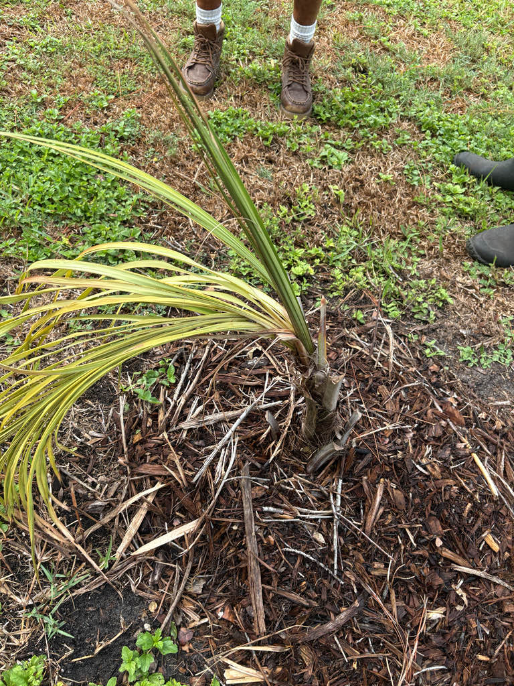

- Scientists first noticed this palm in 2002 — not during a botanical expedition, but in photographs taken during an unrelated survey. The unfamiliar palms caught Alfred Razafindratsira's attention, leading to a later expedition that confirmed the population and ultimately the species.
- Its nickname is the Frozen Coconut Palm — and it earns it. Native to Madagascar's high plateau at more than 3,000 feet elevation, it experiences cool nights and occasional frost that would be hard on a true tropical coconut palm, yet it still has a remarkably coconut-like appearance.
- Known wild populations are confined to a single valley near Manalazina in Madagascar. The IUCN has estimated roughly 500 mature trees there, making this one of the rarest wild palms you are likely to encounter in a botanical collection.
- Some seeds produce two seedlings instead of one — a phenomenon called twin germination. It happens often enough in cultivation to be a recognized quirk of the species, although it is not clear whether the tendency is inherited.
Beccariophoenix alfredii is found only in Madagascar, where its known wild population is confined to a humid valley near Manalazina on the island's high plateau, at roughly 3,440 feet above sea level. The palms grow along sandy riverbeds in a landscape of open grassland that is periodically affected by fire.
It is a surprisingly cool setting for a palm. Nights can be chilly and light frost occurs, which helps explain why this species handles conditions that would be difficult for a true coconut palm.
The palm first came to scientific attention in 2002, when Alfred Razafindratsira noticed unfamiliar palms in photographs taken during an unrelated survey. A field expedition followed, and the species was formally described in 2007. The name alfredii honors Razafindratsira.
Since the formal description, it has made its way into specialty palm collections in Florida, Hawaii, Australia, and elsewhere, valued for its coconut silhouette and surprising cold tolerance.
- The genus Beccariophoenix honors Odoardo Beccari, the Italian explorer and botanist who described many tropical palms. The genus contains only a few species, all native to Madagascar, and its members are close relatives of the coconut palm.
- One useful way botanists distinguish this palm from its close relatives is by looking at the flowers and fruit. Its flower stalks emerge below the crown of leaves, and its fruits are flattened rather than round. Those details helped confirm that this was a distinct species rather than simply a highland form of another Beccariophoenix.
- Beccariophoenix alfredii has shown promising resistance to lethal yellowing, a serious palm disease spread by a tiny planthopper. That is especially interesting in a palm that looks so much like a coconut, which is highly susceptible to the disease.
- The IUCN assessed this species as Vulnerable in 2012, with an estimated 500 or fewer mature individuals in its known wild population. Because so few remain in nature, cultivated specimens in botanical gardens and other collections can serve as an important backup population for the species.
- The occasional production of twin seedlings is an unusual feature of this palm. A single seed can produce two seedlings, although the reason this happens — and whether it has a genetic basis — is still not well understood.
In its native Madagascar, the fruits are eaten by lemurs, including black lemurs. The seeds pass through the animals and germination trials have found that they can sprout faster and in greater numbers afterward, suggesting that lemurs may play an important role in dispersing this palm.
In Florida, its wildlife value is more modest. The cream-colored flowers can attract generalist insects, and birds may take the small fruits. Because this is a Malagasy palm, it is not a host plant for Florida's native butterfly and moth caterpillars.
Propagation is mainly by seed. The palm is monoecious — male and female flowers occur on the same plant — so a single mature palm can potentially produce fruit. Seeds occasionally produce two seedlings from one seed.
Cream-colored flowers emerge on branched stalks below the leaf crown. Each stalk is protected by a long, leathery covering that curls and dries after the flowers open. Exact flowering timing in Florida cultivation is not well documented.
Small, flattened fruits that ripen to dark purplish-black. At roughly an inch across, they look nothing like coconuts. The fruits contain the seeds used for propagation.
Feather-like fronds can reach about 15 feet long, with many slender dark-green leaflets. Young plants may have small translucent windows in the leaflets, a feature that usually disappears as the palm matures. The leaf stalks have no spines or teeth.
Solitary, straight, and unarmed, reaching up to roughly 12 inches in diameter — notably slimmer than the other Beccariophoenix species and closer to the proportions of a true coconut palm. The trunk is gray to tan with closely spaced horizontal ring-scars left by fallen fronds. Young plants may hold onto old fronds, while mature trees tend to shed them more cleanly.
Start with the overall shape: a tall, solitary gray trunk topped by a full crown of arching feather-like fronds that really can look like a coconut palm from a distance. Walk closer and notice the clean, ring-scarred trunk with no crownshaft and no spines anywhere.
Look at where the flower stalks emerge: unlike most palms that bloom between the fronds, this species sends its flower stalks out below the bottom layer of leaves. On younger trees, look for long, dried, curled leather-brown sheaths hanging below the crown — the protective casings that enclosed each flower stalk before it opened.
If the palm is fruiting, look for small, dark, disc-shaped fruits — not coconuts — clustered on branched stalks below the leaf bases. On juvenile plants, hold a leaflet up to the light and look for tiny translucent window patches; they disappear as the palm matures.
No species-specific toxicity has been documented for this palm in the sources reviewed, and it has no spines or other obvious physical hazards. The fruit is not considered a food, but it is also not known to be toxic to people, dogs, or cats — otherwise harmless.
All species in the genus Beccariophoenix appear resistant to lethal yellowing — a serious palm disease spread by a tiny planthopper that has devastated coconut palms and many other species across Florida and the Caribbean. For a palm that looks so much like a coconut, that potential resistance is no small thing.
The IUCN assessed this species as Vulnerable as of 2012, with an estimated 500 or fewer mature individuals in its only confirmed wild locality. Specimens in botanical collections around the world — including this one — carry real conservation weight as living representatives of a palm that is genuinely rare in nature.

- © Randall Carter (CC-BY-NC), via iNaturalist